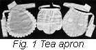
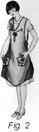

1926—The New-Way Course in Fashionable Clothes-Making
Lesson 16—Aprons
About the Apron
Did you ever stop to consider how many different kinds of aprons there were? A great, big, roomy, coverall apron for mother when guests are expected and important things are happening in the kitchen. A wee bit of a lace apron for the person who is in charge of the tea-urn at five o'clock. A smart bungalow apron to make household duties seem pleasant, and a rather petty apron with deep pockets for the sewing room. And, of course, sweet little aprons for the kiddies—gaily colored and bound with an almost grown-up regard for smartness.
You see, there are really so many interesting kinds of aprons that the subject deserves a lesson all by itself. We're going to teach you little important points about tea-aprons and work-aprons, children's aprons and chafing-dish aprons. And when you are all finished with the lesson, you are actually going to make a pretty apron for yourself.
Do not make the mistake of thinking that an apron is a not-so-very important garment. As a matter of fact, it is really quite as important as a dress—for who can tell when an unexpected guest is going to "drop in" for a chat and find one at the disadvantage of being aproned! But the disadvantage can be changed to an advantage. The apron can be made a very delightful garment. One may actually feel proud to be found wearing a pretty combination of lace and ribbon and soft white dimity—or a rather trig apron-affair of gingham and muslin ruffles.
And then, of course, there is the feeling of utter neatness and satisfaction when one is wearing a crisp little apron. Even though it does hide the pretty dress underneath, it can be so very pretty itself that one hardly minds. And that's what we're going to do—we're going to teach you all about pretty aprons that you can make at home and that you will be delighted to wear.
An Apron for Housework
To be entirely consistent, an apron that is worn in the performance of household duties must cover the whole dress underneath. Otherwise it wouldn't be much of a protection, would it? But the apron must be absolutely neat, for surely one cannot do neat housework when the apron one wears is untidy! And after all, why shouldn't a woman look as attractive in her own home, among her own dear ones, as she does at a fashionable dinner?
If you intend to wear your apron in the morning, make it of the type that can be easily slipped off. Your pattern will tell you whether or not the apron, when finished, is going to be convenient. It should be very simply styled and made of a sturdy material. Gingham is perhaps the most favored material for work aprons, although unbleached muslin when bound with checked gingham is really ideal. You may also use percale if you wish.
In making your work apron, you will find the binder in your box of sewing machine attachments very valuable indeed. With it you can bind in no time at all, all the edges and corners of your apron, adding a certain smart finishing touch that no amount of hand sewing can impart. If you have ruffles on the bottom of your apron—which, we think, are not entirely appropriate but a forgivable attempt at trimming—bind the edges of these ruffles with contrasting color and you will achieve a delightful effect.
The actual making of an apron is going to be taught later, so we will not go into details here. Simply remember to follow your pattern carefully and to sew with a regard for neatness and careful stitch.
A Bungalow Apron
One does not wear a dress under a bungalow apron. It is really a dress itself—an extremely simple dress made of sturdy material that will resist the wear and tear of housework. Smart little touches can be added to this type of apron that do justice to the originality of the wearer and her skill in clothes-making.
If you are planning a bungalow apron, choose a material such as gingham, percale, madras, or American print. These materials are sturdy, practical, neat and they launder well. Follow the directions in your pattern carefully, and cut your apron so that plenty of roominess is allowed. There is nothing quite as uncomfortable as a bungalow apron that is so tight that it hinders you in your housework.
Aprons for Children
Being a child has its compensations—especially if mother makes that child a gay little apron wildly ornamented with the figures of animals or queer little Brownie people. With an apron such as this on, the most unwilling child will feel it her duty to help with the dishes, to set the table, or to otherwise make herself useful. For, after all, she's wearing an apron just like mother's, isn't she?
You will probably find that unbleached muslin is the most appropriate for children's aprons. Some of the newest patterns show full little skirts and tiny tight bodices with a ridiculously large sash behind. Colored animals appear on the bodies and carry the happy child miles and miles away—to a wonderful world all her own. It's remarkable how large a part clothes play in the imaginations of children.
A Sewing Apron
Your sewing apron should be an example of your dress-ideals. It should be appropriate, well-made and attractive. And of course, you should make it yourself.
While it need not necessarily be large, your sewing apron should have pockets large enough to hold some of the smaller things that are constantly being lost or misplaced—the small scissors, the spool of thread, a tape measure, a thimble. And these pockets—three of them are an excellent number—should be high enough to prevent being caught on an unexpected corner or knob.
The material for your sewing apron should be heavy enough to resist the attacks of scissors and needles and pins. Percale is a good material, and unbleached muslin is really very substantial. You may add a touch of hand embroidery down in one corner of one of the pockets if you wish, or you may use hemstitching at the bottom as a touch of neat trimming. Avoid anything that is elaborate.
A Tea Apron
The tea apron is really quite a wicked thing, for it serves no purpose whatever except to look pretty. It has no right to the name it uses, either—for what does it protect? And an apron, we know, is meant as a protection.
But in the tea apron there is the possibility of much beautiful hand work. Here is one little garment into which you can lavish all your love of the beautiful—for the more dainty frills and ruffles and tucks you add to it, the more appropriate does it seem to become! Tea-time isn't tea-time if the one-who-serves isn't wearing one of these frivolous little aprons.
You can make your tea apron of any sheer material you wish, and the tinier you make it the prettier it will be. Batiste, organdie, sheer nainsook—all are splendid materials. Combine them with lace and embroidery, or just with lace and tucks. Add a touch of color, if you wish, by outlining the embroidered design with colored silk thread. Make it as giddy and gay as you wish—and you will have a tea-apron that your guests will admire!
But just a moment—remember than anything over-trimmed is in bad taste. Combine your trimmings in accordance with the rules of harmony you have learned, and you will have an apron that sacrifices none of its charm on the altar of ostentation.
Making a House Apron
- Fold your material lengthwise through the center and lay the pattern on it with the front of the pattern to the fold of the material.
- Pin the pocket on the straight of material and cut pattern carefully.
- Remove the pattern and measure all edges to find the amount of bias binding or rick-rack braid required.
- If binding is used cut on a true bias using the cutting gauge as taught in Lesson 9.
- Join and press these bias folds.
- Attach the binder attachment to your sewing machine and bind the edges of the apron and the pocket.
- Stitch pockets in place.
- Work buttonholes and sew on buttons.
- Work a design on apron if desired.
To the Student
You are well started on your course in home clothes-making. You have learned about bindings and plackets and closings of every kind. You have learned about piping and cording, quilting and braiding. You have had two very interesting lessons—one on embroidery and one on aprons. You have learned how to combine lace and insertion and tucking in a number of attractive ways.
Have you completed your lessons to your entire satisfaction? Have you gained all you can from the lessons? Have you mastered each little detail, each stitch and fastening and placket? Are you ready to continue with the next part of the course?
We want you to feel that although you are many miles away from us, we are taking a personal interest in your progress. We want you to know that nothing gives us such keen satisfaction as to hear from one of our students of her success, to learn that she is out-distancing all her neighbors and friends in the art of dress creation. Most of all, we want you to know that we are always ready to help you—to help you with any little clothes-problem that may be puzzling you. We are always ready to give you advice as to what to include in your new Fall or Spring wardrobe.
Lessons 14-16
Questions
- When should embroidery be used?
- How is the seed stitch made?
- What is the most common use of the chain stitch?
- What is the difference between the feather stitch and briar stitch?
- For what is faggoting used?
- How is couching done?
- Where are bar tacks used?
- What kind of surface is desirable for transferring designs?
- What different kinds of aprons are there?
- What materials are suited to bungalow aprons?
Samples of the following should be sent in for inspection in the envelope provided for the purpose. If samples are not correctly done, corrected work will be returned with full explanation. In the case of COMPLETED GARMENTS, the work will be returned to the student for use. Mail your samples with your answers to Quiz Questions and be sure to put name and address and student number on the outside of the envelope.
Homework Problems
- Make a sample of double hemstitching.
- Make a sample of single feather stitching.
- Make a sample of French knots.
Samples must be at least 4 inches long.